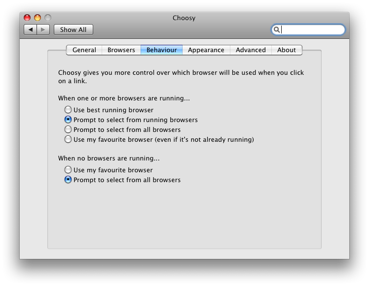

You are here:
Choosy help /
Settings /
Choosy Help: Behaviour settings
This page describes the settings on Choosy's “Behaviour” tab. To find these settings
open System Preferences, click on the Choosy icon and then click on the Behaviour tab.

The settings on this tab allow you to set how Choosy will behave in various situations:
- When one or more browsers are running
- When no browsers are running
When one or more browsers are running
This setting defines what will happen when you click on a link and one or more of the
browsers in your Choosy browser list is already
running. If another browser that is not in your browser list is running the
“no browsers are running” setting will be used instead.
- Use best running browser
-
When you click on a link Choosy will pass the link on to the best running browser.
“Best” here means the browser that is nearest to the top of your
browser list.
- Prompt to select from running browsers
-
When you click on a link Choosy will prompt you to select from all the browsers (from
your browser list) that are running. If only
one browser is running that browser will be used and no prompt will be displayed.
- Prompt to select from all browsers
-
When you click on a link Choosy will prompt you to select from all the browsers in
your browser list. The icons for running
browsers will be solid, the icons for browsers that are not running will be
semi-transparent.
- Use my favourite browser (even if it's not already running)
-
When you click on a link Choosy will use the browser at the top of your
browser list regardless of whether or not
it is currently running.
When no browsers are running
This setting defines what will happen when you click on a link and none of the browsers
in your Choosy browser list are running.
- Use my favourite browser
-
When you click on a link Choosy will use the browser at the top of your
browser list.
- Prompt to select from all browsers
-
When you click on a link Choosy will prompt you to select from all the browsers in
your browser list.